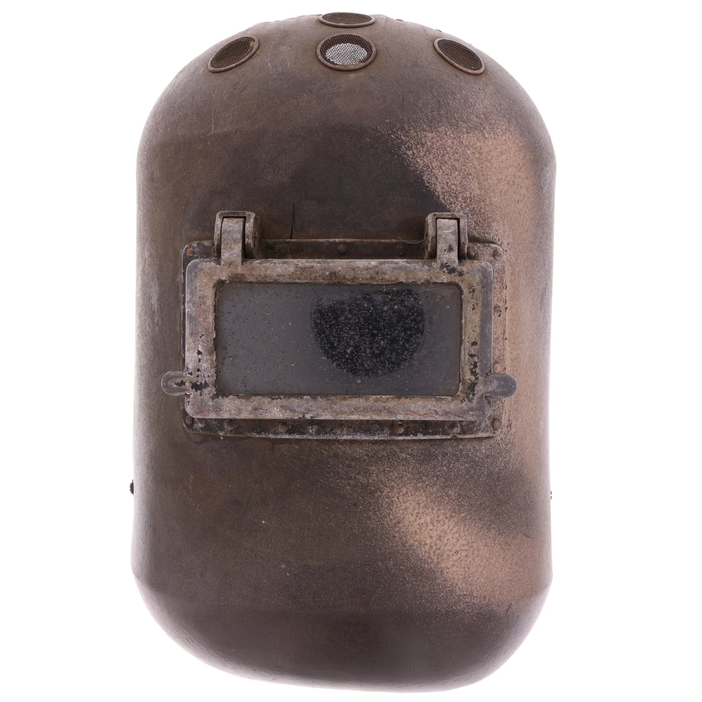

1940
General Electric Welding Mask
This is a welding mask worn for factory work during the 1940s. This specific mask was the same model worn by Vera Anderson, who was depicted in the popular Seamstress of Steel advertisement. Anderson, who was a two-time world champion welder, was the embodiment of the caricature Winnie the Welder, which was used to depict women welders in shipyards. Courses for female welders began in 1942 in Pittsburgh, encompassing the larger shift towards women in manufacturing jobs during WWII. The absence of working-age men due to the war and the steady demand for weapons and vehicles meant that there was an opening for women to start coming into the workforce as manual laborers for the war effort. And, while Winnie the Welder did help normalize women welders, the much more well-known Rosie the Riveter embodied the increase of women in the wartime workforce. First illustrated in Norman Rockwell’s cover of the Saturday Evening Post on May 29, 1943, his image helped convey the idea that a working woman was patriotic and necessary for the country to beat fascism. Mary Doyle Keefe, the model for this painting of Rosie, wasn’t muscular and tall like Rockwell depicted (she was short and 110 pounds). She never stood on a copy of Mein Kampf, and she wasn’t actually holding a rivet gun in her lap. Rather, Rockwell embellished all of these details to show America that women like Rosie were to be the pride of the US, not something to be scorned. There were many different Rosies during WWII, and even different caricatures for different types of manufacturing jobs. Women made up 65% of the US aircraft industry; over a quarter of employed women worked in war industries. They riveted metal sheets for aircraft, created steel in blast furnaces, and manufactured weapons. While African American women initially had a lot of trouble obtaining jobs in manufacturing, Executive Order 8802 banned racial discrimination in the job sector, thereby allowing many more black women to quit their jobs in domestic servitude and begin in the manufacturing sector. However, as always, women faced challenges despite their increased presence in the workforce. Namely, most women were only paid around half of what men were paid for doing the same job. Like in the WAC, women faced immense pressure to maintain their femininity, with some factories even demanding that their women take mandatory makeup lessons to keep up their appearance. And, as the war came to a close, legislation like the Veterans Preference Act meant that women were the first to be fired when the men returned home. While the progress women gained during the war would be somewhat undone, they now knew that they were able to do the same jobs as men, and wouldn’t forget what they were worth.